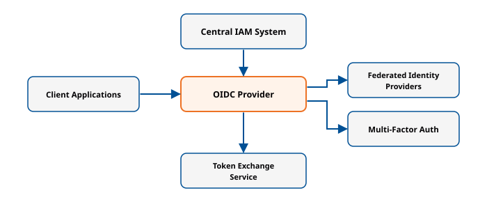
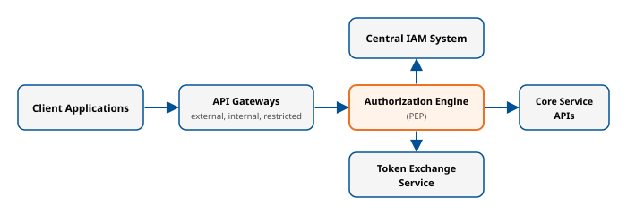
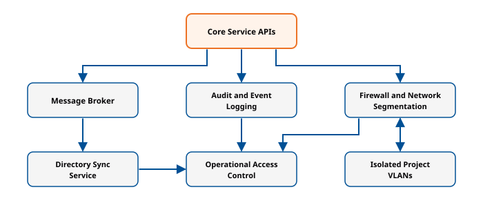

Module 2: Architecture & setup
Audience: TRE Builder
This section introduces the infrastructure layer of the ENTRUST Blueprint, detailing the Participants and the minimal requirements for creating a trustworthy federation.
Design Philosophy
The architecture follows the principle of "start from where you are" and proposes the minimum necessary new infrastructure required to connect TREs. It is explicitly a "back end" architecture; researchers interact only with TREs, not the Federation infrastructure directly. The architecture is part of the ENTRUST Blueprint, which describes the minimal requirements for joining a federation of TREs. It does not prescribe a single technology stack or ask providers to replace what they already operate. Instead, it defines the capabilities, roles, and interfaces that every participating TRE must support, so that existing environments can interoperate without being rebuilt. The architecture has been validated and revised against the requirements of the ENTRUST Driver use cases. Gaps and additional needs identified during that validation were fed back into the current specification, so the design reflects practical implementation experience rather than theory alone. Federation depends on participants trusting each other's decisions about who a user is, what they may do, and what has happened. The architecture therefore centres on a common Authentication, Authorization, and Auditing Infrastructure (AAAI), together with defined interfaces for exchanging data objects between federation participants. Where appropriate, the architecture is aligned with ongoing developments in the European Health Data Space (EHDS) and the European Open Science Cloud (EOSC). For example, the Research Analytics Zone is comparable to the EHDS Secure Processing Environment. The design is intended as a foundation for future scaling, alignment with domain-specific initiatives, and long-term sustainability of the EOSC-ENTRUST framework. It is an evolving specification: this version is the second iteration, and later versions will build on feedback from implementers.
Federation Participants
Participants are the strategic capabilities forming the federation network.
Federation Participants
-
Trusted Research Environment (TRE)
- Function: Primary vehicle for delivering sensitive data to researchers in a secure, controlled, and approved manner.
- Key Components: Research Analytics Zone (RAZ), Secure Data Zone (SDZ), Query Management Zone (QMZ).
-
Index Service
- Function: Creates linkage spines to link distinct datasets at the individual level, enabling authorized joint datasets.
- Key Components: Pseudonymization service, Linkage spines registry.
-
Software Service
- Function: Provides approved software artifacts, including environment configurations and research artifacts (workflows, containers).
- Key Components: Environment Artifacts, Research Artifacts.
-
Discovery Service
- Function: Provides information (metadata) about features of the Federation to users outside the Federation, potentially querying the Registry.
- Key Components: Output Control process.
-
Job Submission Service
- Function: Receives job requests (indirect queries) from researchers and manages forwarding and result handling.
- Key Components: Job Approval process, Output Control process.
-
Federation Services
- Function: Provides coordinating functions: Registry, Trust, Accounting, Management, and Monitoring.
- Key Components: AAAI Capability, Registry.
Interoperability Requirement
Maintain integrity, non-repudiation, and traceability in the federation. Register all Projects with the Federation's Registry services, and assign globally recognizable and unique Project Identities.
For the definition and core characteristics of a Trusted Research Environment (TRE), see TRE Fundamentals.
Zones
TRE Functional Zones: RAZ, SDZ, and QMZ
The TRE model is divided into three functional zones, reflecting different governance and security contexts. A TRE may contain one or more of these zones.
Research Analytics Zone (RAZ)
The RAZ provides the environment for Project Members to access approved data for analysis. Include one or more Project Environments in the RAZ. If the RAZ supports remote data presentations, support the Query (direct) and incoming Response interface types. The ENTRUST RAZ model includes the Principal Investigator (PI) acting as both the Output Approver and Input Approver for the project environment. This modification avoids infrastructure scalability bottlenecks and clarifies legal responsibility, especially where the TRE is not the data controller. The RAZ is comparable to the European Health Data Space's (EHDS) Secure Processing Environment (SPE) concept.
Secure Data Zone (SDZ)
The SDZ manages, links, curates, ingresses, and egresses research-ready sensitive datasets. Include a Data Management function in the SDZ. Route all data movements to or from the SDZ through the Data Management function. Grant Data Manager and Output Approver roles access to the SDZ; do not grant access to other roles. Support the Data Egress and Data Ingress interface types in the SDZ for sending and receiving Data Extract Objects. The ENTRUST architecture includes the Secure Data Archive (SDA) as a specialized SDZ that stores published Curated Data and handles Data Access Requests to such published data. Assign unique IDs and accompanying metadata to Curated Data to enable credit attributions.
Query Management Zone (QMZ)
The QMZ handles queries sent from other, remote TREs or external Job Submission services, typically sitting alongside an SDZ. For direct queries, include an External Presentation component (e.g., a database view) and support the incoming Query (direct) interface type. For indirect queries, include a Job Controller component and a Job Executor component, and route the Job Request through a Job Approval process. Provide a High-Performance Computing (HPC) component in the QMZ to support the execution of indirect query jobs.
TRE Architecture
For the architecture diagram and legend, see Reference Architecture.
Generalized AAA Architecture in a TRE
This section presents a generalized architecture for Authentication, Authorization, and Auditing (AAA) integration within a TRE, derived from the design principles and implementation experience of the Services for Sensitive Data (TSD).
Authentication

The authentication subsystem consists of several coordinated components. At its foundation, the central Identity and Access Management (IAM) system governs all user, project, and group identities, while also providing APIs for authentication, authorization, and resource management. Authentication operations are facilitated by an OpenID Connect (OIDC) provider, which implements standards-based authentication flows—including PKCE for browser clients—and integrates with external identity providers to support multi-institutional access. Federated authentication enables users to log in through trusted third-party providers, simplifying account creation and management processes. The environment enforces multi-factor authentication (MFA), such as time-based (TOTP) or HMAC-based (HOTP) one-time passcodes, which users can manage via self-service portal. Token exchange mechanisms enable the creation of short-lived API access tokens that are limited in scope and purpose. For non-interactive or time-limited workflows, client and instance-based authentication, including “magic links”, enables automated or temporary access, with optional password protection for added security.
Authorization

Authorization is centrally managed by a policy enforcement engine, which serves as the Policy Enforcement Point (PEP) for all API requests entering the environment through designated gateways. This engine evaluates each request against access control policies (grants) maintained within the IAM database. These policies may be static, maintained as code or configuration under version control, or dynamically managed via programmable interfaces provided by the IAM API. All access tokens and authorization grants are strictly scoped to specific projects or tenants and to designated API gateways. Network and resource-level isolation is maintained through private VLANs and firewall policies. The authorization workflow includes validating the token’s integrity and claims, matching access policy grants to requested API operations and contextual attributes, and enforcing any additional restrictions such as time windows or usage limits.
Auditing

Auditing is implemented across all relevant system layers to support accountability, regulatory compliance, and operational monitoring. Every API operation—spanning file, data, and resource actions—is logged in detail, with audit logs accessible for both operational staff and authorized project administrators. Changes to IAM data and resource allocations are tracked, capturing all create, update, and delete events. All storage and file access operations are monitored for data integrity and incident response purposes. Exports of data and downloads from publication interfaces are recorded to maintain a verifiable trail of data egress. Finally, system event and operations logs are aggregated and made available for ongoing monitoring, security investigations, and incident response.
Key Architectural Components and Integration Points
The environment employs multiple API gateways (external, internal, and restricted) to route all API traffic, enforce TLS, and delegate authentication and authorization to centralized control points. A message broker enables event-driven service integrations, publishing relevant events to subscribed internal and external consumers. Microservices synchronize user, group, and project information from the IAM system to external directories as needed. Core research, compute, storage, and notification APIs all integrate directly with the central IAM for authentication and authorization. Web-based self-service and administrative portals, as well as data collection services, interact with the AAA infrastructure for secure, auditable operations. Project-level network isolation is enforced via software-defined firewalls and VLAN segmentation, dynamically configured based on IAM and directory data. Staff operational access is tightly regulated by IAM-based role assignment, group membership, multi-factor authentication, and the use of bastion hosts; all privileged actions are auditable.